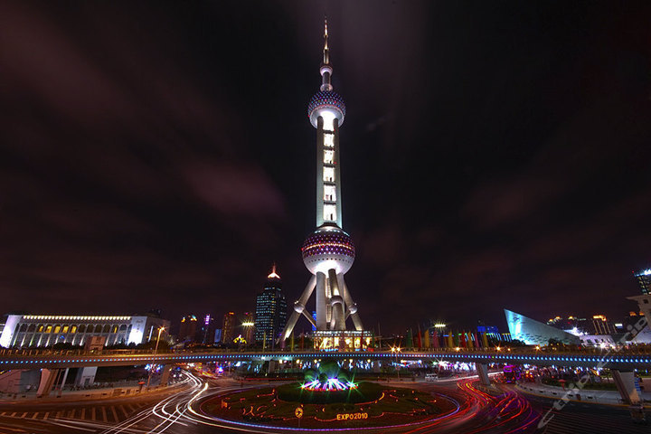
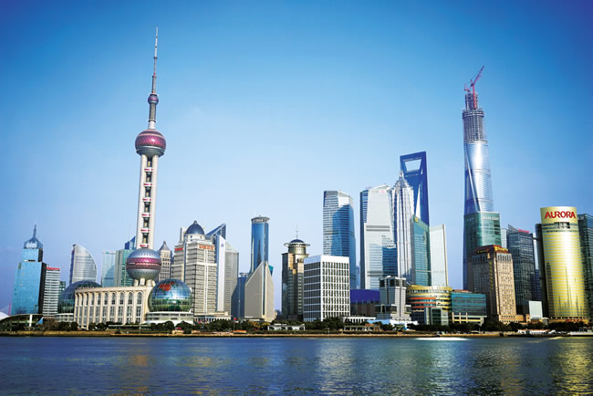
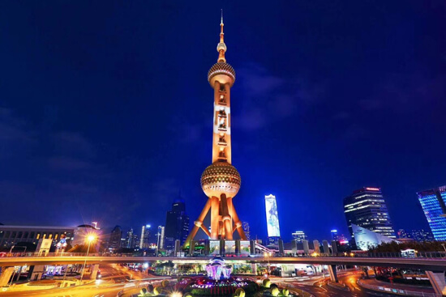
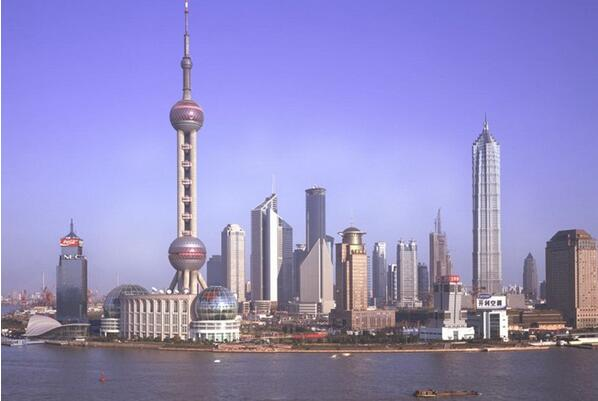

morly旅游圈
东方明珠广播电视塔(The Oriental Pearl Radio & TV Tower)是上海的标志性文化景观之一，位于浦东新区陆家嘴，塔高约468米。该建筑于1991年7月兴建，1995年5月投入使用，承担上海6套无线电视发射业务，地区覆盖半径80公里。 东方明珠广播电视塔是国家首批AAAAA级旅游景区。塔内有太空舱、旋转餐厅、上海城市历史发展陈列馆等景观和设施，1995年被列入上海十大新景观之一。 东方明珠广播电视塔是多筒结构，以风力作用作为控制主体结构的主要因素。主干是3根直径9米，高287米的空心擎天大柱，大柱间有6米高的横梁连结;在93米标高处，由3根直径7米的斜柱支撑着，斜柱与地面呈60°交角。 该建筑有425根基桩入地12米，上千吨的3个钢结构圆球分别悬挂在塔身112米、295米和350米的高空，钢筋混凝土的建筑加3根近百米高的斜撑。
东方明珠广播电视塔的发射天线桅杆长110米，具有发射9套电视和10套调频广播节目的能力，能够覆盖整个上海市及邻近省份80公里半径范围内的地区，建成后大幅度地改善了收听收视质量。 东方明珠广播电视塔是浦东开发开放后第一个重点工程，仅在建成后10年内就接待了295位外国首脑，举办了近100次世界级重要会议和300多场大型活动，成为上海对外宣传的重要窗口。 此外，东方明珠广播电视塔也创造了良好的旅游经济效益。截至2005年，东方明珠广播电视塔的参观人数达2870万人次，营业收入22.36亿元。
东方明珠广播电视塔（The Oriental Pearl Radio & TV Tower）是上海的标志性文化景观之一，位于浦东新区陆家嘴，毗邻黄浦江，与外滩隔江相望，其塔高约468米。该建筑于1991年7月兴建，1995年5月投入使用，承担上海6套无线电视发射业务，地区覆盖半径80公里。
建设意义：
东方明珠广播电视塔的发射天线桅杆长110米，具有发射9套电视 东方明珠广播电视塔 东方明珠广播电视塔 和10套调频广播节目的能力，能够覆盖整个上海市及邻近省份80公里半径范围内的地区，建成后大幅度地改善了收听收视质量。 东方明珠广播电视塔是浦东开发开放后第一个重点工程，仅在建成后10年内就接待了295位外国首脑，举办了近100次世界级重要会议和300多场大型活动，成为上海对外宣传的重要窗口。 此外，东方明珠广播电视塔也创造了良好的旅游经济效益。截至2005年，东方明珠广播电视塔的参观人数达2870万人次，营业收入22.36亿元。
景观设施：
1.观光层:直径50米的下球体室外观光廊标高90米。263米的上球体观光层直径45米，是东方明珠广播电视塔的主观光层。 259米的悬空观光廊全长150米，宽2.1米，通过原第二球体观光平台的临边改造而成。该观光廊由24个可活动收放的“花瓣”状钢化透明夹胶玻璃组成，单元建筑面积17.29平方米。 350米处的太空舱直径为16米，以未来主义的风格展现了太空场景的科幻魅力，是电视塔最高的观光层。
2.陈列馆:2001年5月，6000平方米的上海城市历史发展陈列馆在东方明珠广播电视塔的塔座开馆。 陈列馆通过城厢风貌、开埠掠影、十里洋场、海上旧踪、建筑博览、车马春秋6个展馆的80多个景点、数百件珍贵历史文物、上百幢按比例缩小的华美建筑、117个与真人般大小的蜡像、近千个小蜡像、小泥人，反映了上海的发展过程。
3.旋转餐厅: 东方明珠广播电视塔的空中旋转餐厅坐落于东方明珠塔267米上球体，营业面积为1500平方米，可同时容纳350位游客用餐。
内容整理至网络，如有侵权，请联系我们！1255394075@qq.com
 